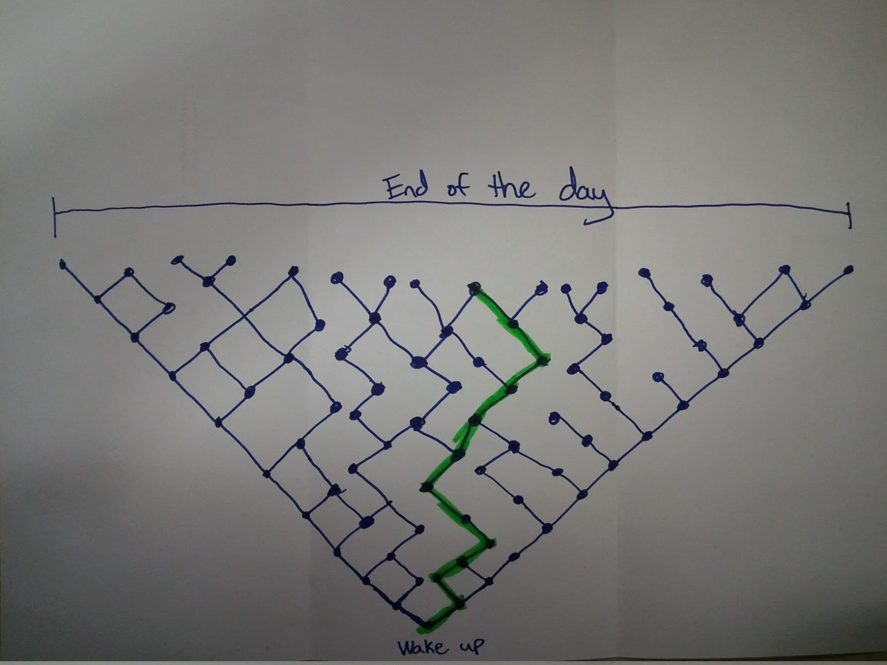

Predestination
2/4/2013
I know we have talked about predestination a little bit in some of our meetings, specifically when we were in Romans. Predestination is one of those tough topics to understand, but I recently heard an example/analogy that helped me picture it a little easier.
Train example
The example relates predestination to a train. A train is "predestined" to go somewhere - meaning that someone planned out that, on a certain day, this train will travel from this city to that city with a number of stops on the way.
A person can choose to board the train, and the moment they give their ticket and get on the train, they are now predestined to go where the train is going. Everything predestined for the train, is now predestined for that person. The person could choose to not board the train, and then would not be predestined to have what the train has to offer. That certainly doesn't mean that the person couldn't have chosen to board the train.
Church example
Another example is when our pastor prepares a sermon at church. It is predestined that anyone who comes to church will hear the message he prepared. If we choose to show up, we are predestined to hear that message. If we choose not to show up, we will not hear the message. That doesn't mean that our pastor picks and chooses who gets to hear the message - it means that we have the choice to hear the message, and once we choose to, we are hearing a message that we were predestined to hear.
God
I think (my opinion) that God knows all of the possible choices we could make, and if we choose one thing (to go to church, for example), our time at church will be what God predestined it to be. I honestly believe that God lets us make that choice to go, and we have the ability to choose not to go (instead of God planning out the exact path through life without us having the ability to make free will choices.)
Anyways, I just wanted to share these 2 little examples because it really helped me picture predestination a little better.
Day of Choices
I was just about to send this note but I thought of another example:
I'm at work, so I created this drawing pretty quick and sloppy, but hopefully it illustrates what I meant:

Basically, the bottom of the drawing is when you wake up in the morning. You have a choice as soon as you wake up. It could be to snooze the alarm, or get up right away. It could be to make breakfast, or to get onto Facebook. I'm just making stuff up, but you get the idea.
The dots on the picture show where there are choices to make. The green highlighted path is an example of how most of our days would end up - somewhere in the middle. But at the top of the picture, you can see the extreme range of possible ways you could end your day.
It's true, that if you look at one of the dots, making one choice versus the other choice doesn't really affect you that much. If you look at the entire day, your choices really can cause some variance in your life.
You could then make one of these pictures for a month of your life, a year of your life, and one for your entire lifetime. The range of possibilities would be massive.
The point?
My point in what I said above is that I believe that God sees the entire "picture" of your life before you were born, knows about all of those choices you can make, and knows the outcome of every choice.
To tie it to predestination and the picture I drew: God predestined that picture for you, but I believe you got to choose your way through it (the green highlighted line). I really believe that we have the free will to choose a different path.
In that sense, you are predestined for all of those paths, but you have the choice to go one way versus another. At the end of the day, the path you took was predestined for you, but had you chosen a different path, that way would have been predestined for you as well.
Hopefully I didn't just muddy the waters by adding the picture :)
God Bless!